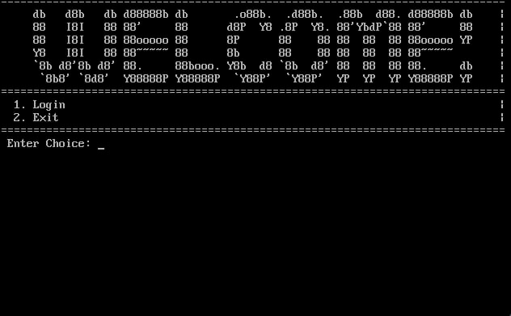
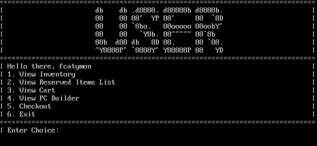
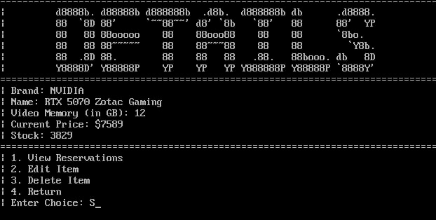
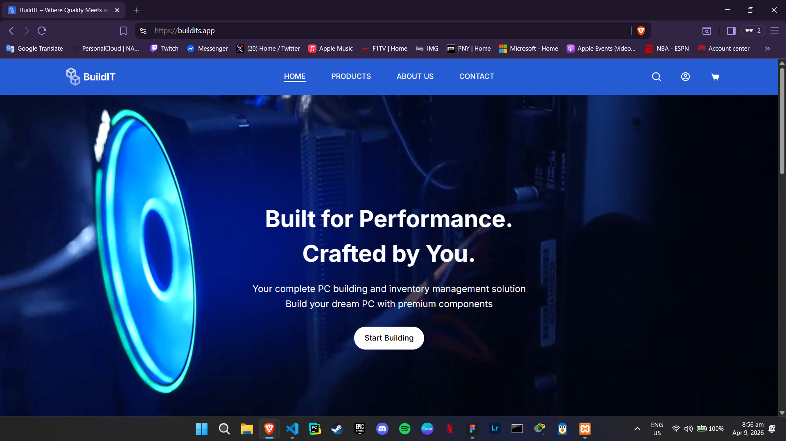
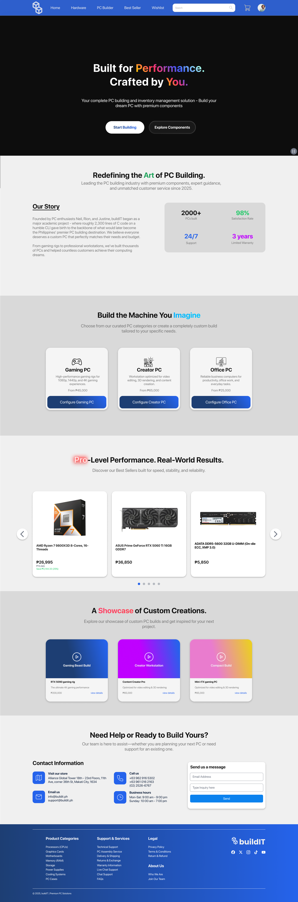

INTECH 2201 Final Project
BuildIT Web App
Developed as a culminating academic project for Web Applications Development 1, BuildIT is a custom PC builder and e-commerce storefront inspired by the mechanics of PCPartPicker. Traditional tech retail sites often overwhelm users with incompatible hardware and disjointed checkout flows. BuildIT modernizes this by providing a sleek, centralized platform where users can seamlessly draft custom PC builds, ensure part compatibility, and complete purchases, demonstrating a practical application of e-commerce database management and secure backend routing.
Development Team
- Neil Jacob Santiago — Lead UI/UX Designer
- Rion Bustos — Lead Developer & Original C Developer
- Anne Margaret Tablanza — Designer & Content Layouts
- Vinze Norbert Siega — Administrator, Database Management, Azure Hosting & Documentation
- Justine Rey Garcia — Content Developer
Disclaimer: This live deployment is hosted temporarily for INTECH 2201 academic evaluation purposes and may be taken offline in the coming days.
System Interface & Prototypes




